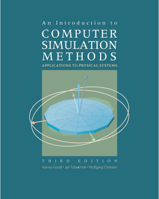

The osp_csm.jar Java archive (jar file) contains ready-to-run programs to accompany An Introduction to Computer Simulation Methods third edition by H. Gould, J. Tobochnik, and W. Christian [Addison Wesley, 2007]. The first two editions of this text used a procedural language, True Basic, and the programs were designed to be an easy route for learning other procedural languages such as Fortran and C.
The third edition uses an object oriented language, Java, which has excellent graphics and user interactivity, and is identical on all computer platforms. However, the use of Java makes writing programs more difficult than in True Basic, in part because of Java's greater power. Students and teachers now expect to write event driven programs with input fields, buttons, and graphical output. For this reason we have written a library of open source Java classes that perform much of the routine programming tasks such as input, output, animation, and user interaction so that users need not spend much time on these relatively uninteresting tasks. This library is described in Chapters 2 and 3 of the book and in greater detail in Open Source Physics: A Users Guide With Examples by W. Christian [Addison-Wesley, 2007].
OSP library source code and examples are available from the OSP website:
http://www.opensourcephysics.org.
Select the Programs tab at the bottom of this window to run the example programs.
License: The Open Source Physics code library and programs described in Open Source Physics: A Users Guide with Examples are being distributed by the Open Source Physics project under the GNU General Public License. A copy of this License is included on the OSP CD. If this CD is not available, write to the Free Software Foundation, Inc., 59 Temple Place, Suite 330, Boston MA 02111-1307 USA or view the license online at
http://www.gnu.org/copyleft/gpl.html.